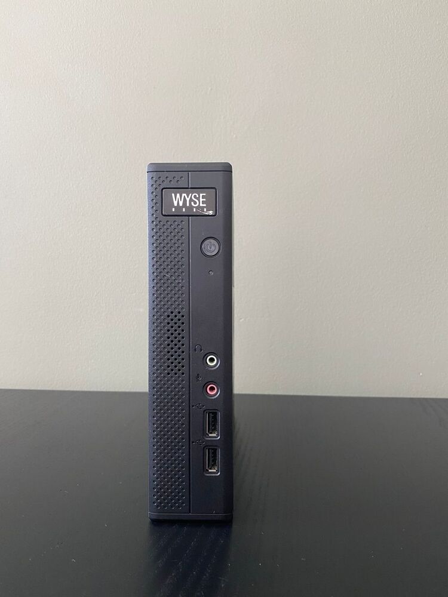
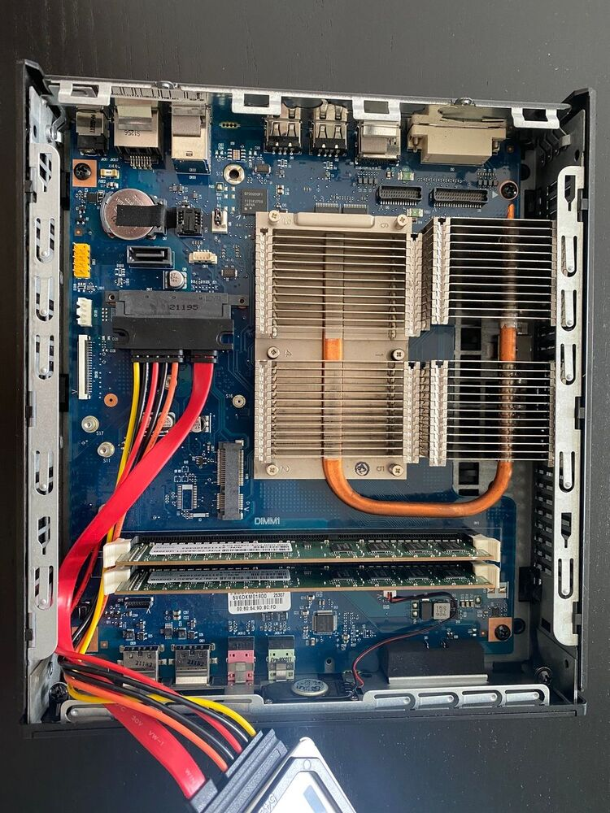

A couple of years ago I bought four Wyse Z90DW thin clients for €17 a piece from a small computer store. I was looking for silent computers that I could use to do some clustering projects with.
Lets take a look at some pictures of this beauty.

As you can see we have a power button which contains a blue LED to indicate the power status. Audio in and out complemented with two usb 2.0 ports.
This thin client is passively cooled so there is ventilation on all sides to radiate the heat away from the APU.
The other side view. Nothing to note here except the VESA mount.
The rear view shows the rest of the ports.
From top to bottom:
- Two blacks studs where other versions have WiFi antenna
- DVI-I port
- Displayport
- 2 USB 2.0
- 2 USB 3.0
- Gigabit ethernet (via a Realtek chip) with PXE boot support
- 19V input for power (I got various laptop adapters that work)
- Kensington lock
- On the side a information card with MAC address, model number and Windows XP Embbeded license key

Finally the internals of this thin client.
I made some upgrades, but the original specs are:
- AMD G-T56N @ 1.65 GHz
- AMD Radeon HD 6310
- 2GB of RAM @ 1066MT/s
- Apacer 2GB flash sata storage that fits in the sata data/power slot
The ram has been upgraded to two 4GB Kingston dimms at 1333 MT/s and the storage with a Crucial MX500 250GB SSD.
Lets face it, this is not a fast CPU at all. According to PassMark this CPU scored 481 points. A Intel Core2Duo E7300 is twice as fast, ouch. But at an 18W TDP I think it still has value in a homelab that is placed throughout an apartment.
Elasticsearch with a 4 node cluster is actually not a problem with small daily log ingestion of other systems. H264 decode hardware acceleration is nice, but I don't know if it works on Linux.
AMD-V support, it has it, but why bother with two slow cores. AES-NI? forget it.
Debian, FreeBSD and OpenBSD all work just fine. Hint, the BIOS is always password protected and defaults to: Fireport as password.
My upcomming project is to put them to work in a Minio object storage cluster for Parquet formatted data.